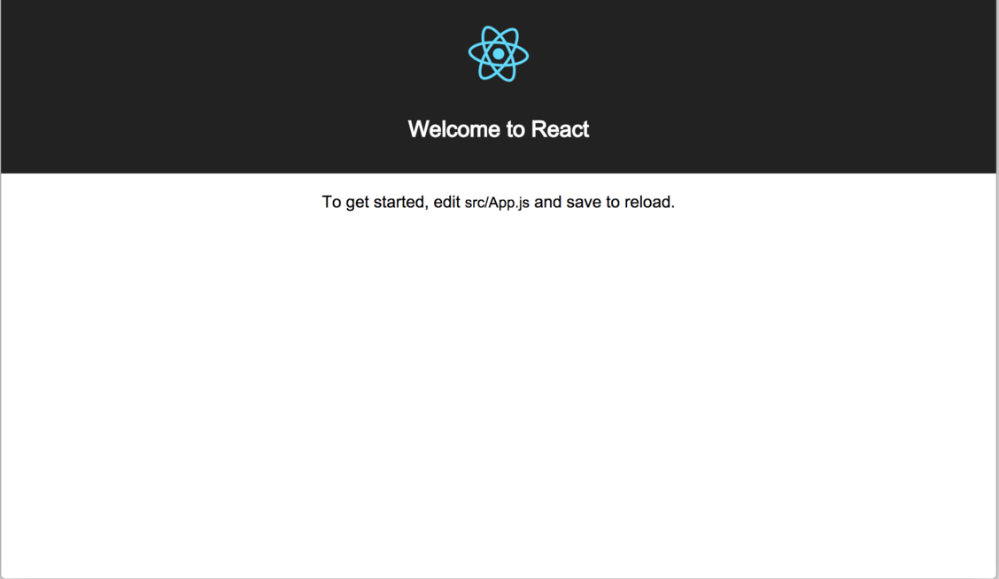
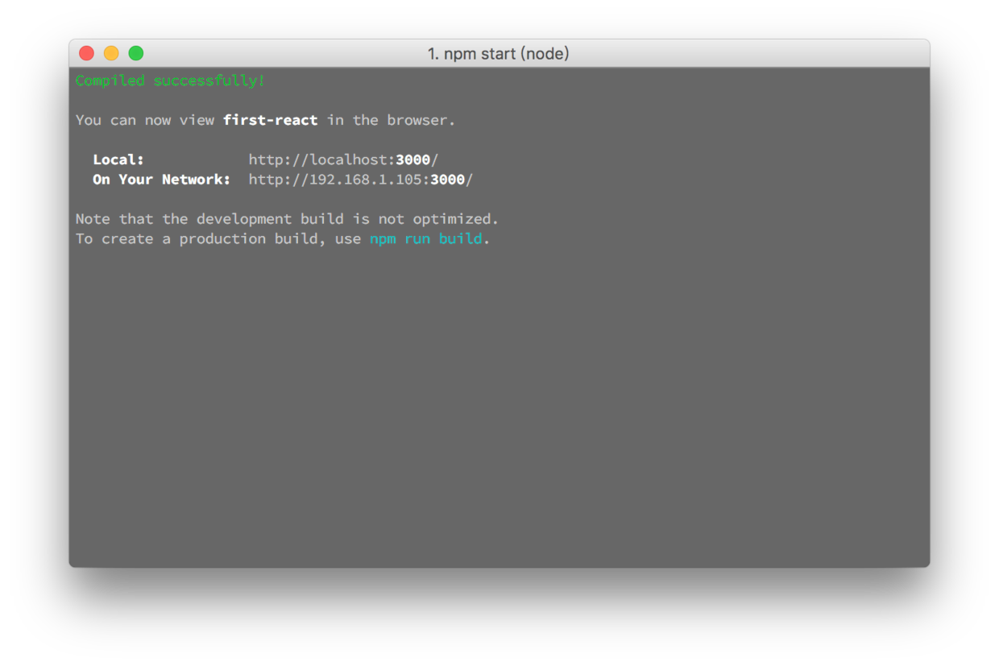

3.2. React¶
目录
新建一个文件夹
进入文件夹
安装项目依赖包(npm install …)
安装完毕之后启动项目(npm start)
项目启动时命令行和浏览器的效果图如下：

浏览器

命令行
再打开新建的文件夹，React自动生成了三个子文件夹在项目中，分别为：
- node_modules
项目依赖包存放位置。当我们运行npm install安装package.json中的依赖包时，该文件夹会自动创建，所有的依赖包会安装到该文件夹里。
- public
主要的作用是html入口文件的存放。当然我们也可以存放其他公用的静态资源，如图片，css等。其中的index.html就是我们项目的入口html文件。
- src
组件的存放目录。在create-react-app创建的项目中，每一个单独的文件都可以被看成一个单独的模块，单独的image，单独的css，单独js等，而所有的组件都存放于src目录中，其中index.js则是js的入口文件。虽然我们并没有在index.html中使用script标签引入他，但是他的作用就和此一样。
进入index.js文件中添加如下代码：
import React from 'react';
import {render} from 'react-dom';
const element = <h1>React</h1>;
const root = document.querySelector('#root');
render(element,root);
- import React from ‘react’
主要作用：让构建工具在当前模块中识别jsx
- import {render} from ‘react-dom’;
这是利用ES6的解析结构的语法，仅仅引入了react-dom的render方法。render方法的作用，就是将react组件，渲染进DOM结构中，它的第一个参数就是react 组件，第二个参数则是一个DOM元素对象。
- const elemet = <h1>React</h1>;const root = document.querySelector(‘#root’);
js基本语句
- render(element,root);
将数据渲染至DOM元素中，前者代表数据，后者代表一个React组件。